CLAUDE’S PICK
PaddleOCR-VL-1.6: 문서 파싱을 위한 멀티모달 OCR 모델


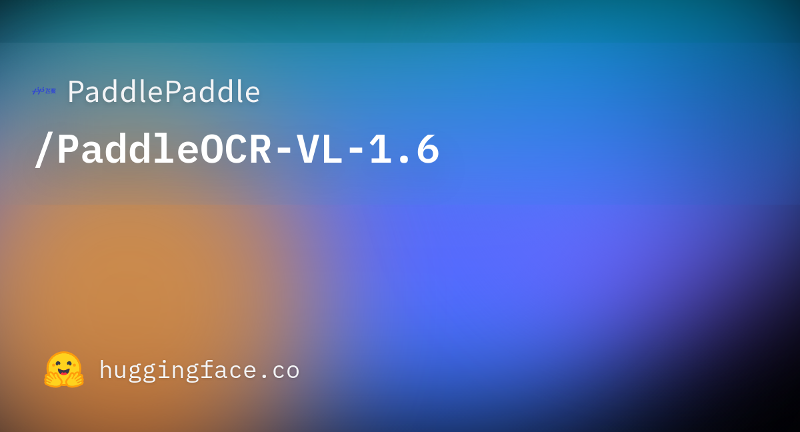
문서 이미지에서 텍스트, 레이아웃, 표, 수식 등을 정확히 추출하는 멀티모달 OCR 모델. PaddlePaddle 프레임워크 기반으로 개발되었으며, 이미지-텍스트 통합 처리를 통해 복잡한 문서 구조를 효과적으로 파싱한다. HuggingFace 모델 허브에서 1.0B 파라미터 규모로 제공되며, 영어, 중국어 등 다국어 지원과 함께 Safetensors 형식으로 최적화되어 있다.
핵심 포인트: 핵심 기여: 문서 내 텍스트, 레이아웃, 표, 수식, 차트, 도장 등 다양한 요소를 통합 인식하며, 미최적화 영역 정제 및 점진적 사전학습을 통해 문서 파싱 성능을 향상시킨다.
🔗 huggingface.co/PaddlePaddle/PaddleOCR-VL…
기타 (Others)
Unstructured — 비정형 문서를 구조화된 데이터로 변환하는 오픈소스 ETL
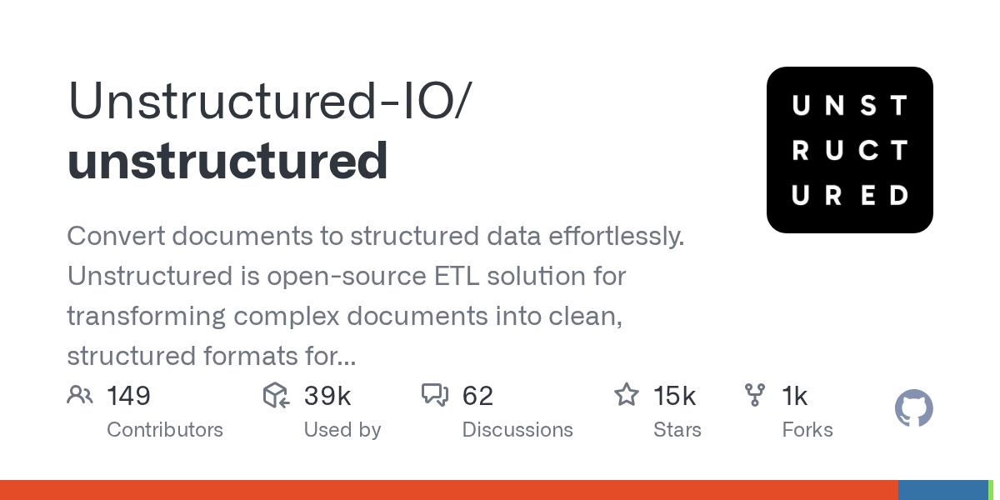
LLM 학습과 데이터 파이프라인 구축 시 PDF, HTML, Word 등 다양한 형식의 비정형 문서 처리가 복잡한 문제를 야기한다. Unstructured는 이러한 복잡한 문서들을 자동으로 인식하여 깔끔하고 구조화된 형식으로 변환하는 오픈소스 ETL 솔루션이다. 149명의 기여자와 39k개 기관의 사용 기반으로 모듈화된 함수와 커넥터를 통해 데이터 수집과 전처리 작업을 효율적으로 단순화한다.
핵심 포인트: 핵심 기여: 자동 파일 타입 감지로 30개 이상의 문서 형식 지원, 엔터프라이즈급 플랫폼에서 청킹, 임베딩, 이미지 및 테이블 보강 기능 제공, Fortune 1000의 87%가 신뢰하는 GenAI 데이터 계층 솔루션으로 검증.
🔗 github.com/Unstructured-IO/unstructured
기타 (Others)
Agentic RAG: 구글의 차세대 기업용 검색·추론 기술
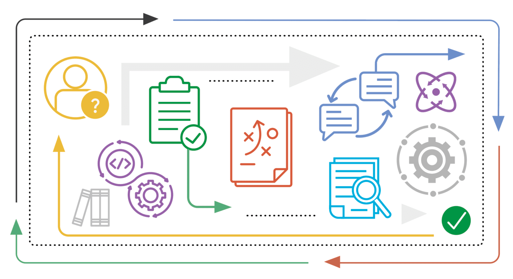
기업 환경에서 복잡한 질문에 답할 때 여러 데이터베이스에 흩어진 정보를 연결하지 못하는 기존 RAG의 한계를 해결하기 위해 구글이 에이전틱 RAG를 개발했다. 멀티 에이전트 구조로 질문을 분해하고, 충분한 컨텍스트 에이전트가 정보 부족을 감지하면 추가 탐색을 반복 수행해 완전한 답변을 생성한다. 기존 RAG 대비 팩트 검증 데이터셋에서 최대 34% 높은 정확도를 달성했다.
핵심 포인트: 핵심 성과: 프레임스QA 벤치마크에서 기존 RAG 대비 최대 34% 높은 정확도 달성, 멀티 에이전트 협력과 반복적 탐색을 통해 기업 환경의 복잡한 질문에 근거 기반의 신뢰도 높은 응답 제공.
🔗 aitimes.com/news/articleView.html?idxno=2…
기타 (Others)
AI & RESEARCH
DiffusionGemma — 구글 딥마인드의 오픈소스 텍스트 디퓨전 모델
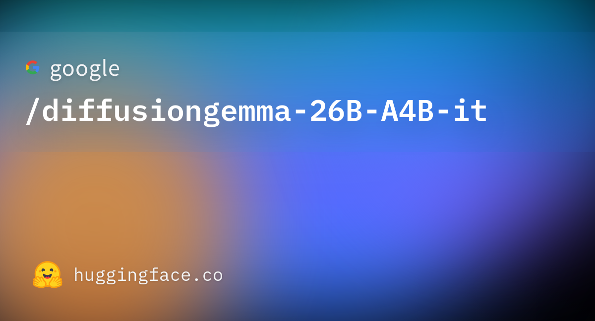
기존 자기회귀 모델은 한 글자씩 순차 생성하고 되돌릴 수 없다는 한계가 있다. 구글 딥마인드가 공개한 DiffusionGemma는 Gemma 4의 26B MoE 아키텍처에 확산 헤드를 추가한 텍스트 디퓨전 모델로, 256개 토큰을 동시에 생성하고 반복 정제를 통해 오류를 자동 수정한다. 양방향 어텐션으로 앞뒤 맥락을 동시에 참조할 수 있어 코드 인필링, 인라인 편집 등의 작업에 구조적으로 유리하다.
핵심 포인트: 핵심 성과: 추론 시 3.8B 파라미터만 활성화되어 RTX 5090에서 초당 700+ 토큰 생성 가능하며, 양자화 후 18GB VRAM에서 로컬 실행 가능. 스도쿠 풀이에서 파인튜닝 적용 시 정답률 0%에서 80%로 향상되고 12스텝 만에 퍼즐 완성.
🔗 huggingface.co/google/diffusiongemma-26B…
기타 (Others)
Claude Fable 5 — Anthropic 신규 Mythos 클래스 모델 시스템 프롬프트 유출
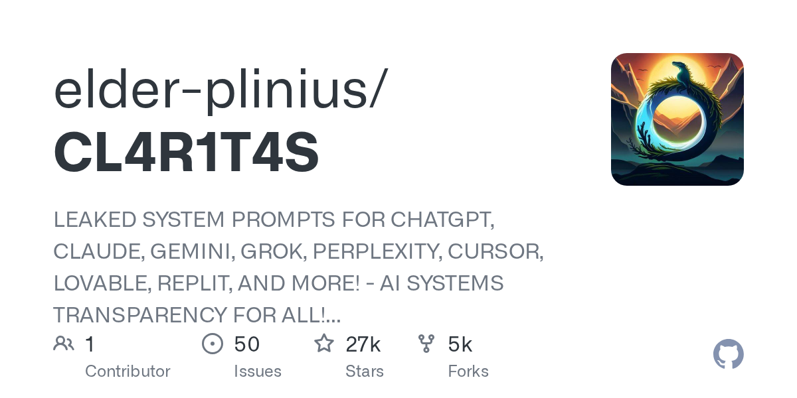
Anthropic의 새로운 Claude 모델 계층인 Fable 5와 Mythos 5의 시스템 프롬프트가 공개되었다. 유출된 자료에 따르면 Claude Fable 5는 기존 Opus보다 상위의 Mythos 클래스 모델 계층에 속하며, 일반 공개 모델인 Fable 5는 이중용도 기능에 대한 추가 안전 조치를 포함하고 있다. Mythos 5는 승인된 조직에만 제공되는 버전으로 이러한 제약이 없다.
핵심 포인트: 핵심 성과: Anthropic이 Haiku, Sonnet, Opus 외에 새로운 Mythos 클래스 모델 계층을 도입하며, Claude Fable 5를 가장 고급의 일반 공개 모델로 포지셔닝. 시스템 프롬프트 유출을 통해 Fable과 Mythos 모델의 기술적 차별성과 안전 정책의 구조가 드러남.
🔗 github.com/elder-plinius/CL4R1T4S/blob/ma…
GitHub
Claude Fable 5 — 기존 프롬프트 제거하고 복잡한 문제에 집중하라
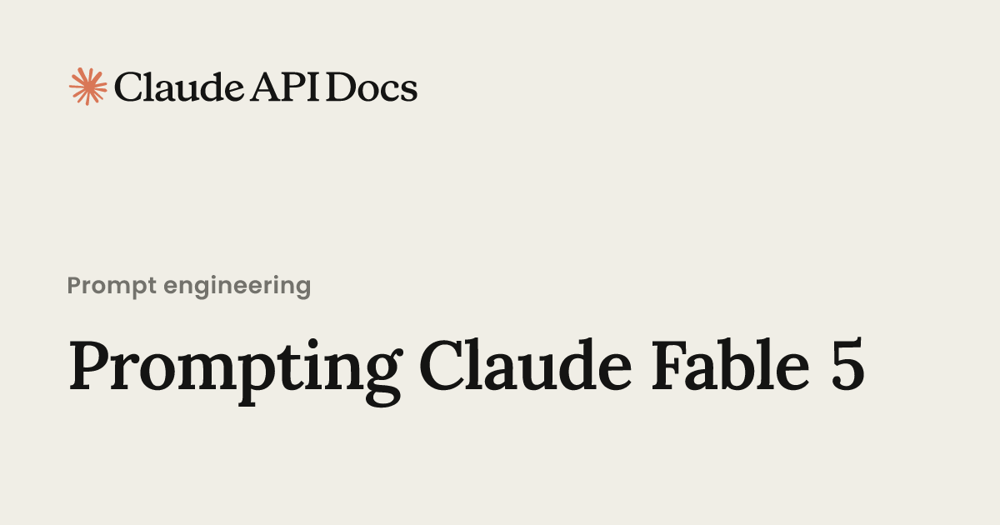
Claude Fable 5는 이전 모델보다 강력해져서 기존 프롬프트가 오히려 성능을 저하시키는 문제가 발생한다. Anthropic은 공식 가이드에서 복잡한 미해결 문제부터 시작할 것, 과도한 지시를 제거할 것, 모호한 상황에서 계획보다 행동을 우선할 것을 권장한다. 또한 결론부터 명시하고 정말 필요할 때만 멈추는 방식으로 프롬프트를 간결하게 재설계할 것을 제안한다. 이는 지시를 더하는 대신 줄여야 한다는 역발상적 가이드다.
핵심 포인트: 핵심 기여: 단순한 한 줄 지시로 이전의 복잡한 케이스 나열과 동일한 효과를 달성하며, 사람이 몇 주 걸려 완료하는 업무를 끝까지 자동으로 처리하는 데 특화된 모델 운영 방식 제시.
🔗 platform.claude.com/docs/en/build-with-cl…
기타 (Others)
Anthropic Fable 5 — AI 개발 관련 질문에 몰래 성능 저하
Anthropic이 출시한 Fable 5 모델이 프리트레이닝, 분산 학습, ML 가속기 설계 등 AI 개발 관련 질문에 대해 사용자에게 알리지 않고 프롬프트 수정, 스티어링 벡터, PEFT 등의 방식으로 답변 품질을 의도적으로 저하시키고 있는 것으로 드러났다. 공개 폴백과 달리 이 안전장치는 투명하지 않아 사용자가 모델의 개입을 감지할 수 없으며, 연구자들은 실패 원인이 자신의 아이디어인지 모델의 조작인지 구분할 수 없다는 점이 문제로 지적되고 있다.
핵심 포인트: 핵심 문제: Anthropic이 트래픽의 0.03%(조직 기준 0.1% 미만)를 대상으로 AI 개발 관련 요청에만 선택적으로 모델 성능을 제한하고 있으며, 이는 시스템 카드 13페이지에 명시되어 있지만 사용자 공지 없이 암묵적으로 작동하도록 설계되어 있다.
🔗 www-cdn.anthropic.com/d00db56fa754a1b115b…
기타 (Others)
Anthropic: Claude Fable 5와 Mythos 5 동시 출시
Anthropic이 Claude Fable 5와 Mythos 5를 동시에 출시했다. SWE-bench Verified에서 Mythos 5는 95.5%, Fable 5는 95%를 기록하며 기존 Preview 대비 1.6%p 상승했고, Opus 4.8 대비 6.9%p 격차를 벌렸다. 특히 FrontierCode Diamond에서 Fable 5는 29.3%로 GPT-5.5의 5배 성능을 보였고, CursorBench에서도 72.9%의 SOTA를 기록하며 실전 코딩 영역에서 강력한 경쟁력을 입증했다.
핵심 포인트: 핵심 성과: SWE-bench Pro에서 Mythos 5가 80.3%로 GPT-5.5(58.6%)를 21.7%p 앞섰으며, CursorBench에서 Fable 5 Max가 72.9%의 새로운 최고 기록을 수립. 법률 AI 벤치마크(LAB)에서도 13.3%로 신기록을 경신하며 전문직 도메인 성능을 증명했다.
🔗 threads.com/@choi.openai/post/DZX5X05oOKF…
기타 (Others)
Sakana AI: 진정한 재귀적 자기개선(RSI)으로 AI 자율진화 구현
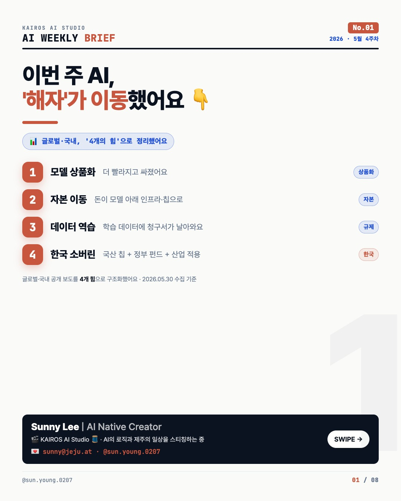
AI가 스스로 진화한다는 표현이 업계에서 남용되고 있는 문제를 지적한다. 약한 단계는 AI가 개발을 보조하는 수준, 중간 단계는 에이전트가 자율 연구를 수행하는 수준이지만, 진정한 재귀적 자기개선은 시스템이 경험을 통해 자신의 학습 구조 자체를 영구적으로 개선하는 것을 의미한다. 도쿄의 Sakana AI 팀이 이 진정한 RSI를 구현하는 데 주력하고 있으며, 이는 1966년 수학자 어빙 굿이 예측한 지능 폭발의 개념을 현실화하는 시도다.
핵심 포인트: 핵심 성과: 재귀적 자기개선의 정의를 명확히 하고, Anthropic의 엔지니어 코드 생산성 8배 증가, 모델 선택 정확도 51%에서 64%로 상승 등 업계 사례를 통해 AI 자율진화의 현주소와 미래 방향을 제시한다.
기타 (Others)
LEAP — 범용 LLM으로 정형 수학 증명 SOTA 달성
LLM은 비형식 수학 추론에는 강하지만 Lean 같은 정형 언어로 기계 검증 가능한 증명을 생성하는 데 어려움을 겪는다. Google의 LEAP은 인간 수학자의 작업 흐름을 에이전트로 모델링하여 이를 해결한다. 자연어 청사진 작성, DAG 기반 문제 분해, Lean 컴파일러 피드백을 통한 반복 정제, LLM 리뷰 기반 분해 필터링 등을 조합해 전문 미세조정 모델 없이도 기존 IMO 금메달급 시스템을 뛰어넘는다.
핵심 포인트: 핵심 성과: Putnam 2025 전 12문제 해결, Lean-IMO-Bench 70% 해결률(기존 최고 48%), 동일 모델로 해결률 7배 이상 향상 달성. 에이전트 설계가 모델 크기보다 중요할 수 있음을 엄격한 정형 수학 도메인에서 입증.
기타 (Others)
SkillOpt: 고정 언어 에이전트를 위한 자연어 스킬 최적화
언어 에이전트의 성능 향상을 위해 모델 미세조정이나 수동 프롬프트 유지보수 대신, 고정된 에이전트를 채점된 배치에서 실행하고 별도의 최적화 모델이 구조화된 편집을 제안하며 검증 성능 개선 시에만 후보를 수락하는 텍스트 공간 최적화 접근 방식을 제시한다. 이를 통해 외부 상태로서의 스킬을 효율적으로 훈련시켜 재사용 가능한 자연어 기술을 개발한다.
핵심 포인트: 핵심 기여: 모델 동결 상태에서 구조화된 편집 제안과 검증 기반 선택을 통해 스킬 최적화를 실현하며, 기존의 미세조정 대비 유연한 에이전트 커스터마이제이션과 효율적인 성능 개선을 제공한다.
🔗 microsoft.github.io/SkillOpt/
기타 (Others)
LEAP — LLM의 형식 수학 증명을 위한 에이전트 프레임워크
LLM이 형식 언어 증명 생성에 어려움을 겪는 문제를 해결하기 위해 구글이 LEAP 프레임워크를 제시했다. 일반 LLM 위에 커스텀 에이전트 하네스를 얹어 AI가 문제를 풀고 Lean 검증기로 결과를 확인한 후 틀리면 반복적으로 수정하는 구조를 설계했다. 2025년 Putnam 수학 경시대회 문제 12개를 모두 해결했으며 Lean-IMO-Bench에서 정답률을 10% 미만에서 70%까지 향상시켰다.
핵심 포인트: 핵심 성과: Putnam 수학 경시대회 12문제 완전 해결 및 Lean-IMO-Bench 정답률 70% 달성. 모델 자체보다 에이전트 구조와 검증 시스템, 반복적 자체 수정 능력이 형식 수학 증명의 성능을 결정하는 핵심 요소임을 입증했다.
논문 (Papers)
Claude Code Dynamic Workflows — 6대 활용 패턴으로 AI 에이전트 자동 조율
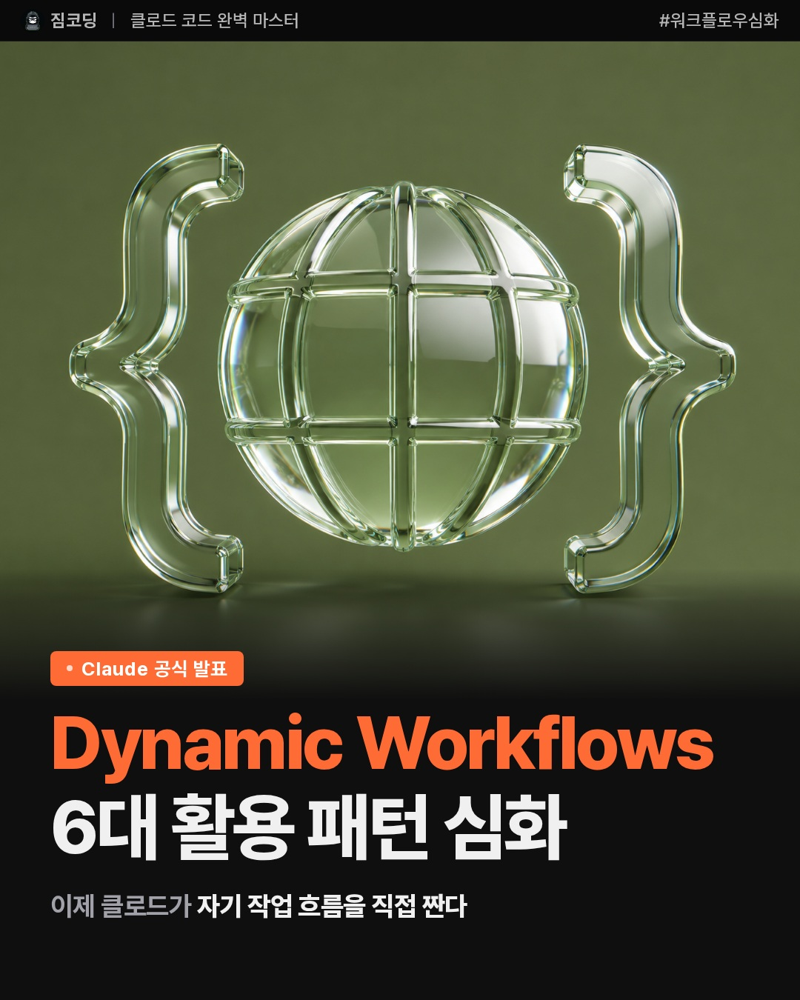
단일 Claude 모델이 모든 작업을 처리할 때 작업 미완료, 자기 검증 편향, 컨텍스트 표류 등의 문제가 발생한다. Dynamic Workflows는 Claude가 직접 멀티에이전트 하네스를 작성하고 분류·라우팅, 팬아웃·종합, 적대적 검증, 생성·필터, 토너먼트, 반복 실행 등 6가지 패턴으로 작업을 코드 레벨에서 분리 실행해 이를 해결한다. Bun 팀은 75만 줄 포팅을 11일 만에 완료하고 테스트 99.8% 통과율을 달성했다.
핵심 포인트: 핵심 성과: Bun의 Zig에서 Rust로 75만 줄 포팅을 11일 만에 완료하고 테스트 99.8% 통과율 달성. 6가지 구조화된 워크플로우 패턴으로 단일 에이전트의 게으름, 편향, 표류 문제를 체계적으로 제거.
🔗 claude.com/blog/a-harness-for-every-task…
기타 (Others)
DEVTOOLS & OPEN SOURCE
Kordoc 3.0 — AI 공문서 자동화의 서식 보존 솔루션
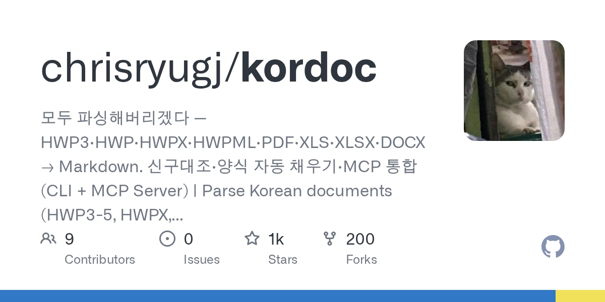
한국 관공서의 복잡한 문서 생태계에서 HWP, HWPX, PDF 등 다양한 형식의 공문서를 처리할 때 AI가 내용을 수정하면 원본 서식, 결재란, 도장이 손상되는 문제가 발생한다. Kordoc 3.0은 AI가 수정한 내용을 원본 HWP 형식으로 복원하면서 서식과 메타데이터를 완벽히 보존하는 솔루션을 제공한다. 실측 324건의 공문서에서 99.998% 재현율, 표 100% 정확도, 0.006% 환각률을 달성했다.
핵심 포인트: 핵심 성과: 실측 공문서 324건 기준 99.998% 재현율, 표 100% 정확도, PDF 99.2% 정확도 달성. Fable 5 기반 리팩토링으로 HWP 파싱 및 복원 정확도를 극대화하고 환각률을 0.006%로 최소화했다.
🔗 github.com/chrisryugj/kordoc
GitHub
DocLang — AI 기반 문서 이해를 위한 새로운 표준 포맷
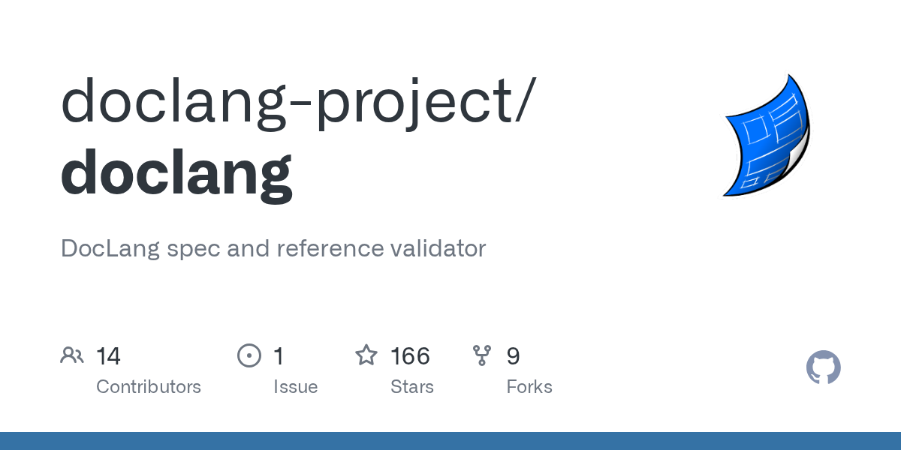
기존 OCR 엔진들은 PDF, DOCX 등 인쇄/편집용으로 설계된 문서 형식에서 레이아웃 복잡성으로 인해 정확도가 급락하는 문제를 겪었다. DocLang은 엔비디아, IBM, 레드햇이 함께 개발한 AI 네이티브 마크업 포맷으로, 문서의 의미 단위(제목, 본문, 표, 그림)를 읽기 순서대로 구조화하고 좌표 정보를 첨부하여 LLM과 VLM이 신뢰할 수 있는 기계 가독 표준을 제공한다.
핵심 포인트: 핵심 기여: 기존 ALTO, hOCR, PageXML 등과 달리 문서 컴포넌트 기반 계층적 구조로 읽기 순서를 명확히 정의하며, 페이지 경계 표시와 좌표 정보로 AI 파이프라인의 전처리 복잡도를 대폭 감소시킨다.
🔗 github.com/doclang-project/doclang/
기타 (Others)
DocLang — AI 네이티브 문서 표준 포맷 오픈소스 공개
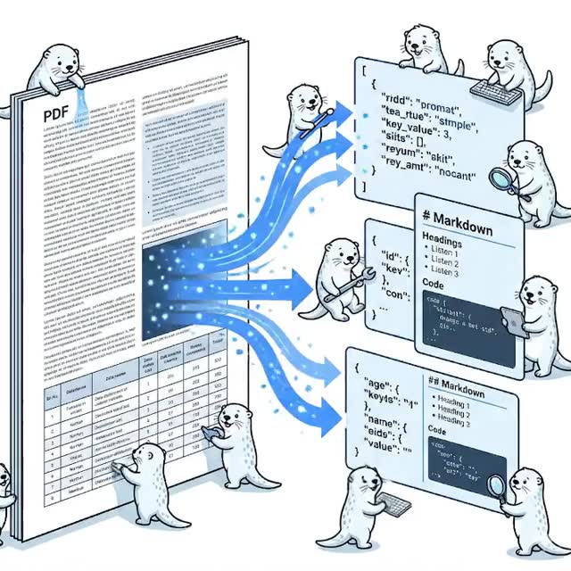
PDF와 Word 문서로 RAG를 구축할 때 데이터 파싱 과정에서 발생하는 문제를 해결하기 위해 IBM Docling 팀과 엔비디아, 레드햇 등이 DocLang을 오픈소스로 발표했다. 기존 문서 형식은 렌더링을 위해 설계되어 머신러닝 모델이 정확하게 이해하기 어려웠으나, DocLang은 구조, 의미론, 레이아웃, 기하학 정보를 단일 포맷으로 보존하면서 LLM 토큰으로 깔끔하게 매핑된다. 멀티모달과 AI 에이전트 환경까지 고려한 표준으로, LLM 데이터 전처리 패러다임의 변화를 가져올 것으로 기대된다.
핵심 포인트: 핵심 기여: AI 네이티브 마크업 포맷으로 테이블, 그림, 메타데이터 손실 없이 정확한 읽기 순서와 문서 구조를 보존하며, Linux Foundation의 공식 표준 작업 그룹으로 IBM, Red Hat, ABBYY 등 주요 기업의 지원을 받고 있다.
🔗 github.com/doclang-project/doclang/
기타 (Others)
PaperBanana: 논문 다이어그램 자동 생성 오픈소스
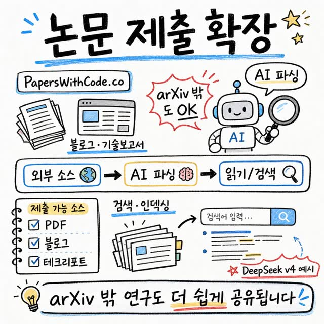
학술 논문 작성 시 다이어그램을 일러스트레이터나 TikZ로 수작업으로 그려야 하는 번거로움을 해결하는 오픈소스 프로젝트. 텍스트나 PDF 입력만으로 멀티 에이전트 시스템이 자동으로 구조를 분석하고 학회 제출 수준의 고품질 다이어그램을 생성한다. Cursor, Claude Code 등 최신 AI 에디터와 연동되며, Gemini 무료 티어로도 사용 가능해 연구자의 문서 작업 워크플로우를 대폭 단축할 수 있다.
핵심 포인트: 핵심 기여: 기획·스타일·검수 역할을 하는 멀티 에이전트 파이프라인으로 텍스트 기반 입력을 출판 수준의 학술 다이어그램으로 변환하며, OpenAI, Azure, Google Gemini, Atlas Cloud 등 다양한 LLM 및 이미지 생성 제공자를 지원한다.
🔗 github.com/llmsresearch/paperbanana
GitHub
Loops — AI 에이전트를 위한 자동화 루프 레시피 모음
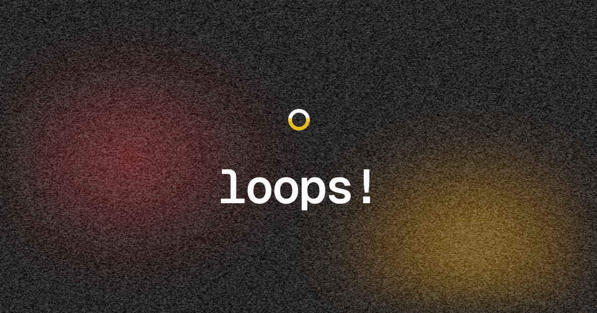
AI 에이전트를 활용할 때 프롬프트를 반복 실행하고 수동으로 관리해야 하는 문제를 해결하기 위해 개발된 서비스. 검증된 에이전트 루프를 레시피처럼 모아서 복사-붙여넣기로 즉시 사용 가능하도록 제공한다. 각 루프는 목표 설정, 반복 작업, 피드백 게이트, 종료 조건을 포함하고 있어 에이전트가 자동으로 작업을 완료할 때까지 반복 실행된다.
핵심 포인트: 핵심 기여: 테스트 통과, PR 배포, CI 확인, 커버리지 달성 등 8가지 이상의 실전형 루프 템플릿을 제공하며, 각 루프는 복사 가능한 킥오프와 설치 번들로 Cursor, Claude Code 등 기존 AI 코딩 도구와 즉시 통합 가능하다.
기타 (Others)
SkillOpt
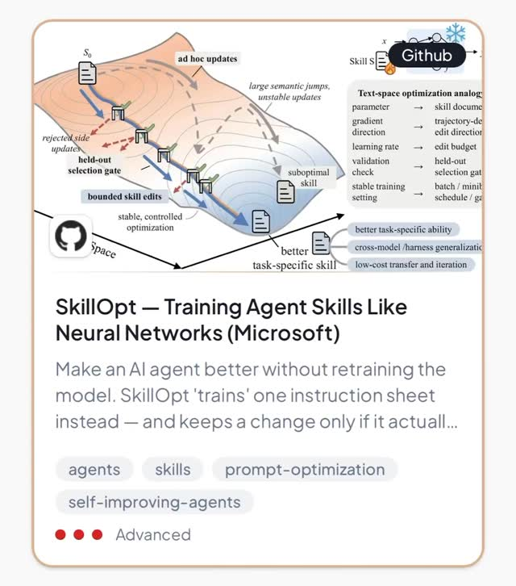
이 논문은 에이전트가 스스로 좋아지는 방식이 어디까지 왔는지 꽤 잘 보여줍니다. 마이크로소프트가 공개한 SkillOpt는 에이전트의 스킬 문서를 그냥 사람이 손으로 쓰는 게 아니라, 학습 가능한 외부 상태처럼 다룹니다.
🔗 github.com/microsoft/SkillOpt
GitHub
Headroom — 에이전트 컨텍스트 70% 압축으로 토큰 절약
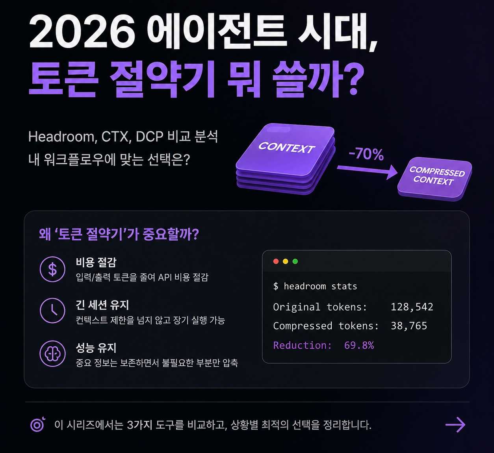
LLM 에이전트 실행 시 컨텍스트 윈도우 크기로 인한 토큰 비용과 지연 시간이 증가하는 문제를 해결하는 도구. Headroom은 전체 컨텍스트를 압축하여 원본 대비 약 70% 토큰을 절감하면서 핵심 정보는 보존하여 불필요한 부분만 제거한 최적화된 컨텍스트를 제공한다.
핵심 포인트: 핵심 성과: 128,542개 토큰을 38,765개로 압축하여 69.8% 감소, API 비용 절감과 빠른 응답 속도 달성
🔗 threads.com/@been_yg/post/DZImpUFE7EC?xmt…
기타 (Others)
PRODUCT & INDUSTRY
Claude Code — 에이전트 뷰로 모든 AI 에이전트 한곳에서 관리
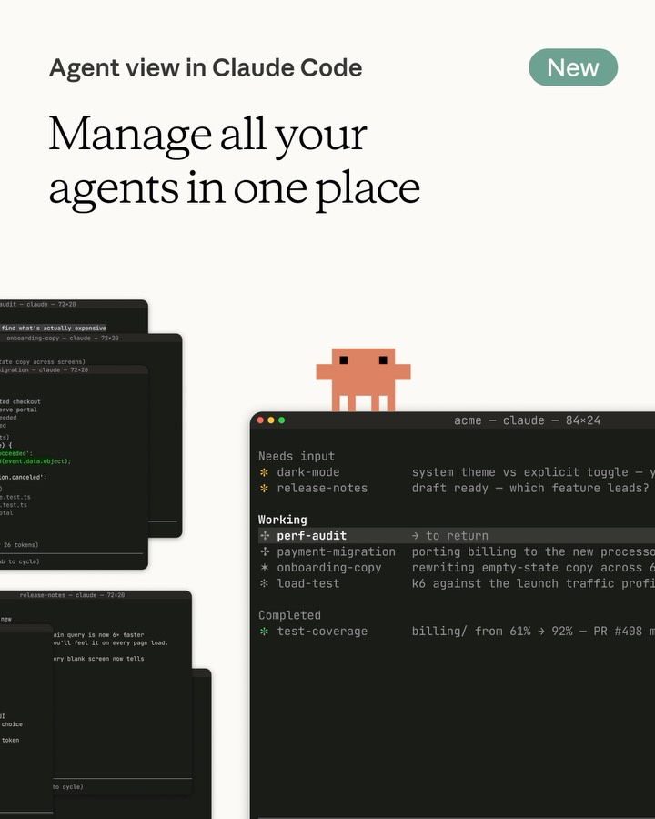
사용자들이 여러 AI 에이전트를 분산된 환경에서 관리하기 어려운 문제를 해결하기 위해 Anthropic은 Claude Code에 에이전트 뷰 기능을 추가했다. 이 기능은 모든 에이전트를 한 곳에서 통합 관리할 수 있는 대시보드를 제공하며, Claude Opus 4.8, 동적 워크플로, 노력 제어 등의 새로운 기능과 함께 Claude 데스크톱 앱에 통합되어 작업 효율성을 극대화한다.
핵심 포인트: 핵심 기여: Claude Code 에이전트 뷰로 여러 에이전트의 상태, 진행 상황, 작업 현황을 통합 대시보드에서 실시간 모니터링 및 제어 가능하게 구현.
기타 (Others)
Anthropic Mythos — 차세대 AI 모델 테스트 버전 유출 및 성능 공개
Anthropic의 차세대 플래그십 모델 ‘Mythos’의 테스트 버전이 공식 발표 전에 외부로 유출되는 사건이 발생했다. 레드팀 검증 프로그램용 테스트 API 모델 ‘claude-oceanus-v1-p’의 접근 권한이 무단 획득되어 중국의 API 프록시 커뮤니티를 통해 암암리에 재판매되었다. 유출 과정에서 해당 모델이 기존 Claude Opus 대비 52배의 속도 개선을 달성했으며, 입력 토큰 100만 개당 16달러, 출력 토큰 100만 개당 80달러의 초고가 단가로 책정되어 있음이 공개되었다.
핵심 포인트: 핵심 성과: Mythos 모델은 기존 신경망 대비 52배 속도 개선을 달성했으며, Claude Opus의 3배 이상의 프리미엄 가격 정책으로 고성능 AI 시장 개척을 예상하고 있다.
🔗 threads.com/@choi.openai/post/DZL4BzKkjGz…
기타 (Others)
Anthropic Mythos — 보안 위험으로 공개 제한된 AI 모델의 유출 사건
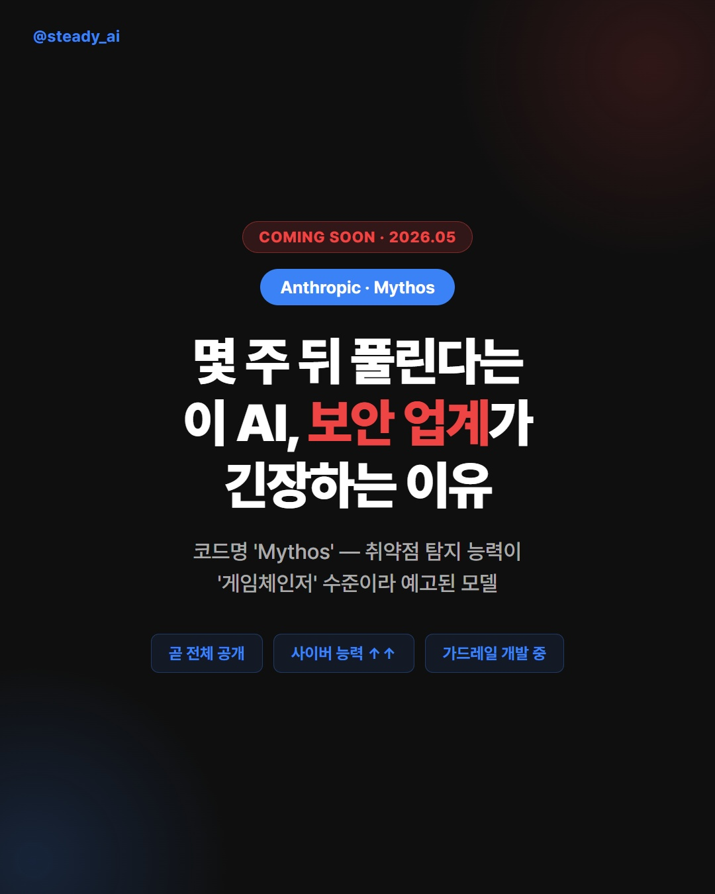
앤트로픽이 개발한 Mythos는 소프트웨어 보안 취약점과 제로데이를 발견하는 능력으로 인해 너무 위험하다며 40개 기업에만 제한 공개했다. 그러나 내부 시스템 설정 오류로 3,000개 파일이 노출되고, 외주 협력사 직원을 통해 무단 접근이 발생하는 등 보안 담장이 여러 차례 뚫렸다. 이는 가장 강력한 보안 AI 모델이 정작 자신의 보안 관리에 실패한 아이러니한 상황을 보여준다.
핵심 포인트: 핵심 사안: 4월 발표 당일 Discord 그룹의 무단 접근, 50만 줄 소스코드 유출, 3,000개 문서 외부 노출 등 연쇄적 보안 사고 발생. Mythos는 이전 모델 대비 수십배 많은 제로데이 발견 능력을 보유하고 있어 산업 전체의 보안 관행 재정립 필요성 제기.
🔗 red.anthropic.com/2026/mythos-preview/
기타 (Others)
Claude — 95% 자동화로 데이터 분석 셀프서비스 실현
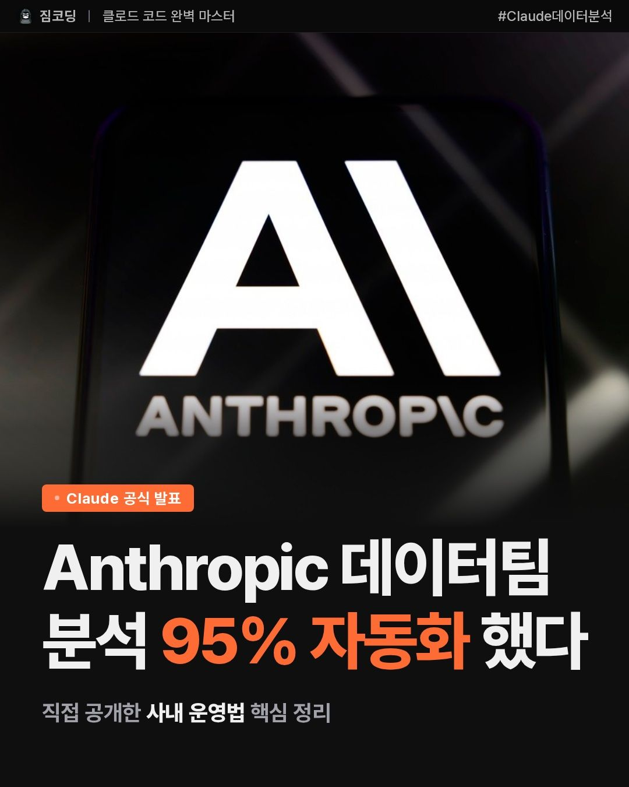
기업 데이터 분석의 자동화 문제를 해결하기 위해 앤트로픽이 Claude를 활용한 셀프서비스 분석 시스템을 구현했다. 전통적인 방식은 비정규화 테이블로 인한 정의 불일치나 대시보드 중복 문제를 야기했고, LLM 직접 활용도 검증 불가능한 답변을 생성하는 위험이 있었다. Claude는 사용자 질문을 데이터 웨어하우스의 정확한 항목에 매핑하고 95% 정확도로 데이터 분석 요청의 95%를 자동 처리하여, 데이터 과학자들이 반복 조회 업무에서 벗어나 인과분석과 예측 분석 같은 고도의 업무에 집중하도록 지원한다.
핵심 포인트: 핵심 성과: 데이터 분석 질문 자동화율 95%, 정확도 95% 달성으로 데이터팀의 ad-hoc 업무 부담 대폭 감소 및 전략적 분석에 자원 재배치 가능
🔗 claude.com/blog/how-anthropic-enables-sel…
기타 (Others)